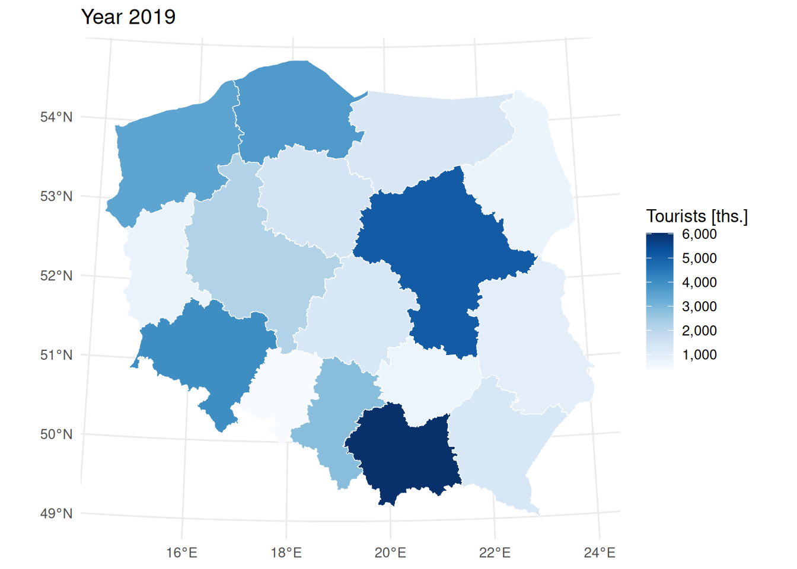

library(dplyr)
library(knitr)
library(ggplot2)
library(lubridate)
library(tidyverse)
library(zoo)
library(corrplot)Explanatory Data Analysis
Packages
Dataset
Dataset is a synthetic version of the original dataset due to disclosure control. Synthetic version was generated with synthesizer package available on CRAN.
First, we load the dataset.
url <- "https://raw.githubusercontent.com/AIML4OS/WP9_S1_PL_TOURISM/main/sspcloud/WP9_S1_Tourism_synt.rds"
# Temporary file
temp_file <- tempfile(fileext = ".rds")
# Download data
download.file(url, temp_file, mode = "wb")
# Read RDS
data <- readRDS(temp_file)Check structure of the dataset
head(data) %>% kable()| regon | voivodeship | county | municipality | object_type | is_seasonal | period_yyyymm | tourists | month_num | active_in_month | seasonality | year | month |
|---|---|---|---|---|---|---|---|---|---|---|---|---|
| ID1 | 14 | 14 | 052 | 11 | 1 | 201801 | 70 | 1 | 1 | 1 | 2018 | 01 |
| ID1 | 14 | 14 | 052 | 11 | 1 | 201802 | 93 | 2 | 1 | 1 | 2018 | 02 |
| ID1 | 14 | 14 | 052 | 11 | 1 | 201803 | 180 | 3 | 1 | 1 | 2018 | 03 |
| ID1 | 14 | 14 | 052 | 11 | 1 | 201804 | 129 | 4 | 1 | 1 | 2018 | 04 |
| ID1 | 14 | 14 | 052 | 11 | 1 | 201805 | 268 | 5 | 1 | 1 | 2018 | 05 |
| ID1 | 14 | 14 | 052 | 11 | 1 | 201806 | 286 | 6 | 1 | 1 | 2018 | 06 |
These variables are interpreted as follows:
regon- ID of accommodation establishment (original Polish name of ID but content is completely different)voivodeship- administrative region code (closely corresponds to NUTS 2)county- administrative region code (former LAU 2)municipality- administrative region code (current LAU, former LAU 1)object_type- recoded type of accommodation establishments, e.g. hotel, motel, etc.is_seasonal-1when operates through whole year,2- when operates in a part of a year (e.g. in a summer or in a winter season)period_yyyymm- text label of year and month of reporting (convenient for data ordering)tourists- number of tourists accommodated (variable of interest)month_num- number of month (1for January)active_in_month-1when establishment operated in a given month (there are many cases when establishment does not provide number of tourists but declares it was active)year- year as integermonth- text label of the month
Some additional variables will make further analysis more convenient.
Summary statistics
Tukey’s five number summary and mean of number of tourists.
stats_table <- data %>%
group_by(type_name) %>%
summarise(
min = min(tourists, na.rm = TRUE),
q1 = quantile(tourists, 0.25, na.rm = TRUE),
median = median(tourists, na.rm = TRUE),
mean = mean(tourists, na.rm = TRUE),
q3 = quantile(tourists, 0.75, na.rm = TRUE),
max = max(tourists, na.rm = TRUE),
na_count = sum(is.na(tourists)),
.groups = "drop"
)
stats_table %>% kable()| type_name | min | q1 | median | mean | q3 | max | na_count |
|---|---|---|---|---|---|---|---|
| agrotourism lodging | 0 | 2 | 14 | 56.91512 | 38.00 | 9790.647 | 13192 |
| boarding house | 0 | 30 | 84 | 151.76908 | 184.00 | 9243.000 | 6866 |
| camping site | 0 | 41 | 142 | 358.83780 | 395.00 | 11242.164 | 4713 |
| complex of tourist cottages | 0 | 25 | 72 | 162.20259 | 171.00 | 7134.162 | 17962 |
| creative arts centre | 0 | 34 | 66 | 110.18723 | 131.00 | 1297.000 | 263 |
| excursion hostel | 0 | 32 | 93 | 200.14527 | 236.00 | 5126.000 | 519 |
| health establishment | 0 | 85 | 207 | 328.02426 | 398.00 | 6994.819 | 1360 |
| holiday centre | 0 | 40 | 126 | 253.97969 | 309.00 | 11532.434 | 25833 |
| holiday youth | 0 | 47 | 130 | 242.27555 | 305.00 | 7653.335 | 2339 |
| hostel | 0 | 58 | 181 | 340.17041 | 435.00 | 4430.306 | 2694 |
| hotel | 0 | 123 | 314 | 614.41728 | 702.00 | 15279.756 | 24319 |
| motel | 0 | 40 | 116 | 189.88071 | 241.00 | 6520.742 | 1259 |
| other hotel establishment | 0 | 38 | 118 | 234.65686 | 282.00 | 11532.425 | 14554 |
| other tourist accommodation establishment | 0 | 19 | 64 | 166.42556 | 175.00 | 10018.751 | 9713 |
| room for guest | 0 | 15 | 42 | 108.38670 | 93.00 | 10823.274 | 58829 |
| school youth shelter | 0 | 9 | 45 | 121.65434 | 136.00 | 6026.627 | 4865 |
| shelter | 0 | 44 | 141 | 249.12317 | 299.00 | 4025.256 | 763 |
| tent camp sites | 0 | 27 | 82 | 221.88981 | 244.00 | 4853.647 | 5083 |
| training-recreational centre | 0 | 45 | 149 | 265.91992 | 352.00 | 10822.874 | 6348 |
| youth shelter | 0 | 23 | 108 | 190.27997 | 266.75 | 3510.002 | 606 |
Number of accommodation establishments, broken down into seasonal and year-round.
objects_summary <- data %>%
group_by(voivodeship,seasonality) %>%
summarise(
Number_of_establishments = n_distinct(regon),
.groups = "drop"
) %>% pivot_wider(names_from = seasonality,
values_from = Number_of_establishments) %>%
mutate(seasonal_share = seasonal / (seasonal +`year-round`),
year_round_share = 1-seasonal_share
)
objects_summary %>% kable()| voivodeship | seasonal | year-round | seasonal_share | year_round_share |
|---|---|---|---|---|
| 02 | 80 | 1213 | 0.0618716 | 0.9381284 |
| 04 | 102 | 395 | 0.2052314 | 0.7947686 |
| 06 | 213 | 380 | 0.3591906 | 0.6408094 |
| 08 | 104 | 260 | 0.2857143 | 0.7142857 |
| 10 | 51 | 349 | 0.1275000 | 0.8725000 |
| 12 | 346 | 1542 | 0.1832627 | 0.8167373 |
| 14 | 53 | 671 | 0.0732044 | 0.9267956 |
| 16 | 51 | 164 | 0.2372093 | 0.7627907 |
| 18 | 213 | 602 | 0.2613497 | 0.7386503 |
| 20 | 98 | 243 | 0.2873900 | 0.7126100 |
| 22 | 1356 | 754 | 0.6426540 | 0.3573460 |
| 24 | 71 | 736 | 0.0879802 | 0.9120198 |
| 26 | 37 | 273 | 0.1193548 | 0.8806452 |
| 28 | 295 | 388 | 0.4319180 | 0.5680820 |
| 30 | 213 | 623 | 0.2547847 | 0.7452153 |
| 32 | 1318 | 705 | 0.6515077 | 0.3484923 |
Total number of tourists by accommodation establishments type.
tourists_by_type <- data %>%
group_by(type_name) %>%
summarise(
tourists_total = sum(tourists, na.rm = TRUE),
.groups = "drop"
) %>%
mutate(share_pct = round(100 * tourists_total / sum(tourists_total),digits = 2))
tourists_by_type %>% kable()| type_name | tourists_total | share_pct |
|---|---|---|
| agrotourism lodging | 1132155.6 | 1.25 |
| boarding house | 1870098.6 | 2.06 |
| camping site | 995774.9 | 1.10 |
| complex of tourist cottages | 1623648.0 | 1.79 |
| creative arts centre | 105889.9 | 0.12 |
| excursion hostel | 234770.4 | 0.26 |
| health establishment | 2140030.3 | 2.36 |
| holiday centre | 6138943.1 | 6.78 |
| holiday youth | 418894.4 | 0.46 |
| hostel | 1924684.2 | 2.12 |
| hotel | 52122860.8 | 57.54 |
| motel | 656417.6 | 0.72 |
| other hotel establishment | 7845517.4 | 8.66 |
| other tourist accommodation establishment | 2607389.3 | 2.88 |
| room for guest | 5618224.4 | 6.20 |
| school youth shelter | 831507.4 | 0.92 |
| shelter | 437709.4 | 0.48 |
| tent camp sites | 509680.9 | 0.56 |
| training-recreational centre | 3184657.0 | 3.52 |
| youth shelter | 186093.8 | 0.21 |
Plots
In this section we explore our data through several plots. First, we start with histogram but on log scale.
library(scales)
Attaching package: 'scales'The following object is masked from 'package:purrr':
discardThe following object is masked from 'package:readr':
col_factordata %>% filter(tourists>0) %>%
ggplot(aes(x = tourists)) +
geom_histogram(bins = 80, fill = "#2C3E50", color = "white", alpha = 0.8) +
scale_x_continuous(trans = "log10", labels = label_comma()) +
labs(
title = "Histogram of Tourists (Logarithmic Scale)",
x = "Number of Tourists (log10)",
y = "Count"
) +
theme_minimal(base_size = 14)
It turns out that the distribution of monthly number of tourist is close to log-normal.
The following plot reveals trend and seasonality of total number of tourists and pandemic effect.
tot_month <- data %>%
group_by(period_date) %>%
summarise(total_tourists = sum(tourists, na.rm=TRUE))
ggplot(tot_month, aes(x = period_date, y = total_tourists/1000)) +
geom_line(aes(col=total_tourists/1000)) +
scale_x_date(date_breaks = '6 months')+
scale_color_viridis_c()+
labs(title = "", x = "Month", y = "Total number of tourists [ths.]")+
theme_bw()+
theme(legend.position = 'none')
Autumn and winter season during pandemic resulted in large decrease. Summer period was without severe restrictions and the number of tourists increased but not to pre-pandemic level. The pandemic situation has a heterogeneous effect in regional breakdown (voivodeships).
top_voiv <- data %>%
count(voivodeship, sort = TRUE) %>%
slice_head(n = 16) %>%
pull(voivodeship)
data %>% filter(voivodeship %in% top_voiv) %>%
ggplot(aes(x = period_date, y = tourists, color = voivodeship, group = voivodeship)) +
stat_summary(geom = "line", fun = mean, size = 1) +
stat_summary(geom = "point", fun = mean, size = 2) +
labs(
title = "",
x = "Date",
y = "Average number of tourists",
color = "Voivodeship"
) +
facet_wrap(~voivodeship)+
theme_minimal(base_size = 14) +
theme(axis.text.x = element_text(angle = 45, hjust = 1),legend.position = 'none')
Maps and choropleths
We shall use an old-fashion shape file to create several spatial visualizations.
library(RColorBrewer)
library(gridExtra)
library(sf)
library(ggplot2)
# URL to ZIP stored in your repo
url <- 'https://github.com/AIML4OS/WP9_S1_PL_TOURISM/raw/refs/heads/main/sspcloud/voivodeships.zip'
# download into temporary file
zip_temp <- tempfile(fileext = ".zip")
download.file(url, zip_temp, mode = "wb")
# unpack temporary file
temp_dir <- tempdir()
unzip(zip_temp, exdir = temp_dir)
# find shape file
shp_file <- list.files(temp_dir, pattern = "\\.shp$", full.names = TRUE, recursive = TRUE)
# load
poland_map <- st_read(shp_file)Reading layer `voivodeships' from data source
`/tmp/RtmphW0cny/voivodeships/voivodeships.shp' using driver `ESRI Shapefile'
Simple feature collection with 16 features and 36 fields
Geometry type: MULTIPOLYGON
Dimension: XY
Bounding box: xmin: 171677.5 ymin: 133223.4 xmax: 861895.8 ymax: 775019.1
Projected CRS: ETRF2000-PL / CS92First, we calculate some statistics.
tur_year <- data %>%
mutate(year = substr(period_yyyymm, 1, 4)) %>%
group_by(voivodeship, year) %>%
summarise(tourists = sum(tourists, na.rm = TRUE), .groups = "drop")Prepare keys for merging.
voivodeship_names <- c(
"02"="Dolnośląskie", "04"="Kujawsko-Pomorskie", "06"="Lubelskie",
"08"="Lubuskie", "10"="Łódzkie", "12"="Małopolskie",
"14"="Mazowieckie", "16"="Opolskie", "18"="Podkarpackie",
"20"="Podlaskie", "22"="Pomorskie", "24"="Śląskie",
"26"="Świętokrzyskie", "28"="Warmińsko-Mazurskie", "30"="Wielkopolskie",
"32"="Zachodniopomorskie"
) %>% tolower()
tur_year <- tur_year %>%
mutate(voivodeship_name = voivodeship_names[voivodeship])Time for choropleth.
map_df <- poland_map %>%
left_join(filter(tur_year, year == "2019"), by = c("JPT_NAZWA_" = "voivodeship_name"))
ggplot(map_df) +
geom_sf(aes(fill = tourists/1000), color = "white") +
scale_fill_gradientn(colors = brewer.pal(9, "Blues"),
na.value = "grey90",
labels = scales::comma) +
labs(title = paste("Year", "2019"), fill = "Tourists [ths.]") +
theme_minimal()
Most of tourist visit Małpolskie voivodeship, and then Mazowiecki voivodeship - capital region. Seaside region are also popular.